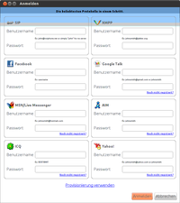
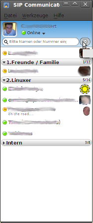
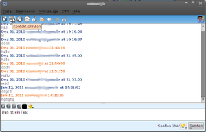
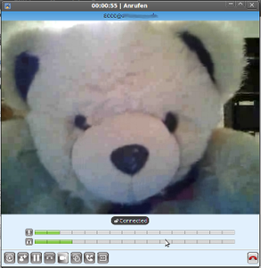

Jitsi
Dieser Artikel wurde für die folgenden Ubuntu-Versionen getestet:
Ubuntu 14.04 Trusty Tahr
Zum Verständnis dieses Artikels sind folgende Seiten hilfreich:
Jitsi  (früher SIP Communicator) ist ein sehr vielseitiges Kommunikationsprogramm, das in Java programmiert ist. Damit ist es portabel und kann unter allen gängigen Betriebssystemen ausgeführt werden. Ein zentrales Merkmal von Jitsi ist die standardmäßige Verschlüsselung von Text und Video durch OTR bzw. SRTP und ZRTP.
(früher SIP Communicator) ist ein sehr vielseitiges Kommunikationsprogramm, das in Java programmiert ist. Damit ist es portabel und kann unter allen gängigen Betriebssystemen ausgeführt werden. Ein zentrales Merkmal von Jitsi ist die standardmäßige Verschlüsselung von Text und Video durch OTR bzw. SRTP und ZRTP.
 Jitsi unterstützt bislang folgende Dienste:
Sofortnachrichtendienst (Instant Messenger) für die Protokolle
AIM
XMPP (Jabber)
Facebook-Chat
GoogleTalk
ICQ
MSN
SIP Simple
Yahoo!
Internet-Telefonie
 Derzeit sind Gespräche zwischen Jitsi-Clients über SIP oder Jingle möglich. Diese werden standardmäßig verschlüsselt. Es sind auch Jingle-Verbindungen zu Empathy möglich - diese allerdings nur unverschlüsselt.
Dabei können Videos oder Bildschirminhalte übertragen werden. Letztere sind technisch gesehen Videos - anders als bei Empathy, welches dafür VNC benutzt. Fernsteuerung funktioniert bislang nur zwischen zwei Jitsi-Clients. Während einer Konversation können diese Dienste ein- oder ausgeschaltet werden, was Jitsi zu einem flexiblen Werkzeug zur Online-Zusammenarbeit macht. Die Bild- und Tonqualität ist dank Breitbandcodecs sehr gut.
Nicht alle Routinen sind in Java geschrieben. Zeitkritischen Teile wie z.B. die Audio- und Videocodierung sind als native Routinen ausgeführt. Das sichert eine brauchbare Performance auf gängiger Hardware. Jitsi ist der einzige funktionstüchtige Jingle-Client für Windows (Stand Februar 2011). Andere Programme, die audiovisuelle Kommunikation über Jabber versprechen, besitzen diese Funktionalität bislang entweder explizit nicht (Pidgin) oder sie funktionieren einfach nicht (Gajim).
Funktionen:
Telefonie über SIP und Jingle
Videoübertragung in hoher Qualität
sichere mit OTR verschlüsselte Textnachrichten in allen Protokollen
Freigabe des eigenen Bildschirmes und Fernsteuerung durch die Gegenseite (über SIP und Jingle)
verschlüsselte Medien (Ton, Video, Bildschirm)
Audiokonferenzen mit mehreren Teilnehmern (sowohl SIP als auch Jingle)
NAT - Durchgang mit STUN, TURN, ICE und JingleNodes sorgt dafür, dass auch Gespräche über mehrere Router hinweg ohne Zwischenstelle möglich sind.
Konfiguration vom Server aus (dort Provisioning genannt)
Echo und Geräuschunterdrückung
Angekündigte Funktionen:
Kompatibilität mit GoogleTalk (Audio und Video)
Einbinden von externen Adressbüchern
IRC-Protokoll-Unterstützung
Video- und Bildschirmkonferenzen mit mehreren Teilnehmern
Voraussetzungen¶
Das Programm erfordert eine Java-Laufzeitumgebung (JRE), welche mindestens der Version 1.6 (Java 6) oder neuer entspricht.
Installation¶
Jitsi ist nur bei Ubuntu 14.04 in den offiziellen Paketquellen enthalten und kann über folgendes Paket installiert werden:
jitsi (universe)
 mit apturl
mit apturl
Paketliste zum Kopieren:
sudo apt-get install jitsi
sudo aptitude install jitsi
Fremdpaket¶
Einfache zu installierende DEB-Pakete sind über die Downloadseite  erhältlich und können nach dem Herunterladen manuell installiert werden [2]. Im Zuge der Installation wird eine Fremdquelle eingerichtet, um automatisch Updates zu erhalten.
erhältlich und können nach dem Herunterladen manuell installiert werden [2]. Im Zuge der Installation wird eine Fremdquelle eingerichtet, um automatisch Updates zu erhalten.
Hinweis!
Fremdpakete können das System gefährden.
Konfiguration und Bedienung¶
Kontaktliste¶
Der Sofortnachrichtendienst ist recht einfach und geradlinig. Vorhanden sind alle Funktionen, die man von einem solchen Programm erwarten würde:
Hinzufügen von Kontakten
Ordnen in Gruppen
Chat beginnen
Zusätzlich dazu gibt es noch weitere praktische Funktionen:
Zusammenfassen von Kontakten zu Metakontakten
Einfaches Suchen in der Kontaktliste durch Tippen im Suchfeld oberhalb der Liste
direktes Anrufen (Ton, Bild und Bildschirmfreigabe)
Gesprächsliste
verpasste Anrufe
Chat-Fenster¶
 Zusätzliche Funktionalität wird im Chat-Fenster zur Verfügung gestellt:
Audioverbindung aufbauen
Videoverbindung aufbauen
Bildschirm zum Gesprächspartner freigeben
Verbindungsverlauf - die Nachrichten der vergangenen Tage
Einstellungen
Datei schicken (allerdings noch Inband-Dateitransfer über Jingle; ist in Arbeit)
Blättern im Chat - zurück
Blättern im Chat - nach vorn
Verschlüsselte Verbindung mit Off the Record aufbauen
Gesprächsfenster¶

Lautstärkeregler für Mikrofon und Lautsprecher
Einfacher Klick auf die Mikrofontaste aktiviert die Stummschaltung
Wählscheibensymbol zum Versenden von DTMF (funktioniert mit Asterisk erst, wenn dort in sip.conf folgender Eintrag konfiguriert ist:
dtmfmode=rfc2833)Telefonkonferenz: weitere Personen mit ins Gespräch nehmen (im Moment nur Audio Video versprochen)
Gespräch pausieren
Gespräch als MP3-Datei aufnehmen (wurde noch nicht getestet)
eigene Kamera aktivieren und Bildtelefongespräch aufbauen (geht während eines Audio-Gesprächs)
eigenen Bildschirm der anderen Seite zur Verfügung stellen (man kann zusätzlich aktivieren, dass die Gegenstelle auch Tastatur und Maus bedienen kann)
Anrufweiterleitung
Vollbild für Video
Als Telefon (Beispiel: an einer Fritz!Box) verwenden¶
Dafür ist es erforderlich zuerst ein entsprechendes Telefoniegerät im System der Fritz!Box einzurichten (z.B. Fritz!Box 7490: "Telefonie -> Telefoniegeräte -> Neues Gerät einrichten -> "Telefon" wählen -> weiter -> "IP-Telefon" wählen -> …").
Im Programm sind dann die folgenden Schritte erforderlich. Fenster "Jitsi": "Datei -> Konto hinzufügen…". Fenster "Konto hinzufügen": "Netzwerk -> SIP -> Erweitert". Fenster "Kontoassistent": Änderungen in den Einstellungen siehe Tabelle. (Stand: Version 2.4.4997)
| Reiter | Parameter | Wert |
| Benutzerkonto | SIP-Kennung | die Nummer, die in der Fritz!Box für dieses IP-Telefon angezeigt wird, zum Beispiel 620 |
| " | Passwort | das Kennwort, welches man bei der Einrichtung dieses IP-Telefons in der Fritz!Box gewählt hat |
| " | Anzeigename | kann beliebig gewählt werden |
| Verbindung | Registrar | fritz.box |
| " | Name für die Anmeldung | die Nummer, die in der Fritz!Box für dieses IP-Telefon angezeigt wird, zum Beispiel 620 |
| " | Methode | REGISTER |
| " | Intervall | 3600 (Empfehlung) |
Anrufe können nun durch einfache Rufnummerwahl getätigt werden. Ein bekanntes Problem der "FRITZ!Box 7320", Firmware-Version 100.04.89 (und vielleicht anderen) bei ausgehenden Verbindungen kann möglicherweise durch ein zusätzliches Konto mit den selben Werten außer "Anzeigename" (Wert beliebig anders) und "Registrar" (Wert "fritz.fonwlan.box") gelöst werden. Sind ausgehende Verbindungen trotzdem nicht möglich kann ein Anhängen von "@fritz.box" oder "@fritz.fonwlan.box" zur Lösung führen.
Zum Testen kann man nun zum Beispiel "**600" (Anrufbeantworter 1 in der Fritz!Box) wählen.
Falls beim ausgehenden Anruf eine Verbindung zustande kommt, aber die Gegenseite nicht gehört wird / nichts hört, hilft es eventuell, bei "Encodings" "G722" auszuschalten.
Konfiguration¶
Konfiguration der Server-Verbindungen auf einer Übersichtsseite. Diese erscheint auch, wenn man Jitsi zum ersten Mal aufruft.
Problembehebung¶
"Message too big" bei Sipgate¶
Bricht der Gesprächsaufbau mit der Fehlermeldung
"Message too big"
ab, so müssen die Video-Codecs H.264 und H.263 in Jitsi deaktiviert werden. Als Video-Codec kann stattdessen VP8 aktiviert werden. Mit diesem sind dann auch Videokonferenzen mit dem SIP-Protokoll über Sipgate möglich.
Kamera wird nicht erkannt "Kein Gerät"¶
Wird die Kamera im Einstellungsmenu "Video" nicht gefunden (!!"Kein Gerät"!!), hilft es evtl., Jitsi mit der folgenden Zeile neu zu starten:
LD_PRELOAD=/usr/lib/i386-linux-gnu/libv4l/v4l2convert.so jitsi
Links¶
meet.jit.si
- browserbasierte Online-Variante (Chromium, Google Chrome und Opera 24+)
Jitsi - Wikipedia
Internet-Telefonie
 Übersichtsartikel
Übersichtsartikel
- Erstellt mit Inyoka
-
 2004 – 2017 ubuntuusers.de • Einige Rechte vorbehalten
2004 – 2017 ubuntuusers.de • Einige Rechte vorbehalten
Lizenz • Kontakt • Datenschutz • Impressum • Serverstatus -
Serverhousing gespendet von